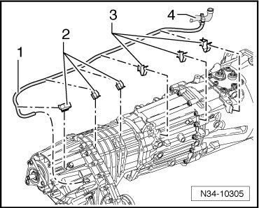

Transfer Case Breather Line Routing
Transfer Case Breather Line Routing
The breather line - 1 - for the transfer case runs over the transfer case and transmission to the coolant hose - 4 -.

Thereby it is clipped into the retainer - 2 - on the transfer case and the retainer - 3 - on the transmission.
The illustration shows the routing of the line with a manual transmission. The routing of the line with an automatic transmission is similar.